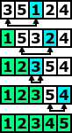

Porządkowanie przez wybór
W lekcji o wyszukiwaniu binarnym pokazaliśmy jak szybko wyszukiwać element
w uporządkowanym ciągu. Dowiedzieliśmy się także, iż wyszukiwanie w posortowanym
ciągu jest znacznie szybsze niż w ciągu nieuporządkowanym, dlatego tak ważne jest,
aby w niektórych danych utrzymywać porządek. Oczywiście nie zawsze dane są na wstępnie
uporządkowane, wówczas najpierw potrzeba je posortować. Wobec tego należy użyć
jakiegoś algorytmu, który weźmie nieposortowany ciąg liczb i poprzestawia elementy tak,
aby stał się uporządkowany. W tej lekcji, jak i dwóch następnych lekcjach, omówimy
najprostsze algorytmy sortowania jakimi są porządkowanie: przez wybór,
bąbelkowe oraz porządkowanie przez wstawianie. Wymienione algorytmy nie są algorytmami
rekurencyjnymi, więc czytając te trzy lekcje możesz spokojnie zapomnieć o istnieniu rekurencji.
Te trzy algorytmy zostały opisane w tym systemie, tylko dlatego, iż później poznamy
dwa znacznie szybsze, lecz nieco bardziej skomplikowane algorytmy sortowania.
Jednak przed poznaniem tych algorytmów, dobrze zapoznać się z tymi trzema
prostymi metodami sortowania.
Algorytm opisany w tej lekcji możemy wyprowadzić z definicji problemu porządkowania.
Zauważmy, że: jeśli mamy ustawić elementy ciągu w kolejności od najmniejszego do największego,
to można wybrać w nim najpierw element najmniejszy i umieścić go na początku,
za nim umieścić drugi najmniejszy element ciągu (czyli najmniejszy w pozostałym ciągu) itd.
Metoda ta nazywa się algorytmem porządkowanie przez wybór. Do jej dokładnego
opisania jesteśmy już przygotowani gdyż w drugiej lekcji poznaliśmy metodę znajdowania
najmniejszego elementu w ciągu (lekcja druga była poświęcona znajdowaniu maksymalnego
elementu, jednak bardzo łatwo zaadaptować tę metodę do znajdowania elementu minimalnego).
Musimy jedynie podać w jaki sposób kolejno znajdowane elementy, od najmniejszego
do największego, mają być ustawiane jeden za drugim. Najoszczędniej byłoby robić
to w tej samej tablicy, w której znajduje się ciąg do uporządkowania. Jest to możliwe:
znaleziony element zamienia się z pierwszym elementem ciągu, w następnym etapie –
drugi najmniejszy element w ciągu zamienić miejscami z drugim elementem ciągu itd.

Sposób działania algorytmu porządkowania przez wybór ilustrujemy na rysunku po lewej stronie.
Zwróćmy uwagę na trzecią iterację – bieżący najmniejszy element może się już znajdować
na swoim miejscu w ciągu. W realizacji tego algorytmu jednak specjalnie tej sytuacji
nie wyróżniamy – w tym przypadku taki element jest zamieniany miejscem z samym sobą.
Twoim zadaniem w tej lekcji jest zaimplementowanie funkcję „void uporzadkuj(n)”.
Funkcja jako parametr przyjmuje jedną liczbę n oznaczającą rozmiar tablicy.
Funkcja powinna realizować powyżej opisany algorytm porządkowania przez wybór.
Funkcja „uporządkuj” powinna działać na tablicy, która jest wyświetlona w osobnym oknie,
w tym celu program powinien wykorzystywać dwie funkcje specjalne „zamien” oraz „porownaj”,
które są szerzej omówione w zakładce „funkcje specjalne”. W razie problemów z implementacją
tej funkcji możesz spojrzeć do wskazówki w postaci pseudokodu. Po skończonej implementacji
powinieneś porównać swoje rozwiązanie z rozwiązaniem wzorcowym, a także przeczytać podsumowanie.